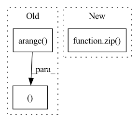

Pattern ID :37283

Before Change
layer = self.layers
elif layer > self.layers:
raise ValueError(f"Number of layers specified ({layer}) exceed layers in model ({self.layers})!")
representations1 = hidden_states[torch.arange(num_inputs)[:, None], query_idx1].mean(1)
representations2 = hidden_states[torch.arange(num_inputs)[:, None], query_idx2].mean(1)
else:
representations1 = list(map(lambda x: x[torch.arange(num_inputs)[:, None], query_idx1].mean(1), hidden_states))
After Change
layer = self.layers
elif layer > self.layers:
raise ValueError(f"Number of layers specified ({layer}) exceed layers in model ({self.layers})!")
representations1 = torch.stack([hs.squeeze()[idx[0]:idx[1]].mean(0) for hs, idx in zip(hidden_states.split([1] * num_inputs), query_idx1)])
representations2 = torch.stack([hs.squeeze()[idx[0]:idx[1]].mean(0) for hs, idx in zip(hidden_states.split([1] * num_inputs), query_idx2)])
else:
representations1 = list(map(lambda x: torch.stack([hs.squeeze()[idx[0]:idx[1]].mean(0) for hs, idx in zip(x.split([1] * num_inputs), query_idx1)]), hidden_states))
In pattern: SUPERPATTERN
Frequency: 3
Non-data size: 3
Instances
Fragment ID: 107362022
Project Name: kanishkamisra/minicons
Commit Name: b9f76e2dfc167677a5e1a4877b8bc76799a01974
Time: 2021-08-21
Author: menogetusername@gmail.com
File Name: minicons/cwe.py
M Class Name: CWE
N Class Name: CWE
M Method Name: extract_paired_representations(3)
N Method Name: extract_paired_representations(3)
M Parent Class: object
N Parent Class: object
M File Name: minicons/cwe.py
N File Name: minicons/cwe.py
M Start Line: 151
M End Line: 170
N Start Line: 151
N End Line: 170
'>
Before Change
layer = self.layers
elif layer > self.layers:
raise ValueError(f"Number of layers specified ({layer}) exceed layers in model ({self.layers})!")
representations = hidden_states[torch.arange(num_inputs)[:, None], query_idx].mean(1)
else:
representations = list(map(lambda x: x[torch.arange(num_inputs)[:, None], query_idx].mean(1), hidden_states))
After Change
elif layer > self.layers:
raise ValueError(f"Number of layers specified ({layer}) exceed layers in model ({self.layers})!")
// representations = hidden_states[torch.arange(num_inputs)[:, None], query_idx].mean(1)
representations = torch.stack([hs.squeeze()[idx[0]:idx[1]].mean(0) for hs, idx in zip(hidden_states.split([1] * num_inputs), query_idx)])
return representations
'>
Fragment ID: 107362027
Project Name: kanishkamisra/minicons
Commit Name: b9f76e2dfc167677a5e1a4877b8bc76799a01974
Time: 2021-08-21
Author: menogetusername@gmail.com
File Name: minicons/cwe.py
M Class Name: CWE
N Class Name: CWE
M Method Name: extract_representation(3)
N Method Name: extract_representation(3)
M Parent Class: object
N Parent Class: object
M File Name: minicons/cwe.py
N File Name: minicons/cwe.py
M Start Line: 109
M End Line: 132
N Start Line: 110
N End Line: 132
'>
Before Change
if sparse_variables_1 > 0:
if sparse_variables_1 < 1:
sparse_variables_1 = np.ceil(sparse_variables_1 * N).astype("int")
up[np.random.choice(np.arange(N), N - sparse_variables_1, replace=False)] = 0
vp = np.random.rand(M, 1)
if sparse_variables_2 > 0:
if sparse_variables_2 < 1:
sparse_variables_2 = np.ceil(sparse_variables_2 * M).astype("int")
vp[np.random.choice(np.arange(M), M - sparse_variables_2, replace=False)] = 0
gaussian_x = np.random.normal(0, eps, (m, N))
gaussian_y = np.random.normal(0, eps, (m, M))
X = np.outer(z, up)
Y = np.outer(z, vp)
X += gaussian_x
Y += gaussian_y
return X, Y, up, vp
def _OH_digits(digits):
b = np.zeros((digits.size, digits.max() + 1))
After Change
z = np.random.normal(0, 1, n)
views = []
true_features = []
for p, sparsity in zip(view_features, view_sparsity):
weights = np.random.rand(p, 1)
if sparsity > 0:
if sparsity < 1:
'>
Fragment ID: 107362025
Project Name: jameschapman19/cca_zoo
Commit Name: 6e0c61ce1ab34a95c67f794aefa73814ef633df0
Time: 2021-04-27
Author: james.chapman.19@ucl.ac.uk
File Name: cca_zoo/data.py
M Class Name: AnonimousClass
N Class Name: AnonimousClass
M Method Name: generate_simple_data(4)
N Method Name: generate_simple_data(6)
M Parent Class:
N Parent Class:
M File Name: cca_zoo/data.py
N File Name: cca_zoo/data.py
M Start Line: 327
M End Line: 361
N Start Line: 98
N End Line: 123